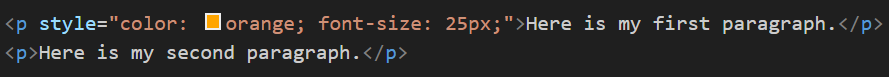
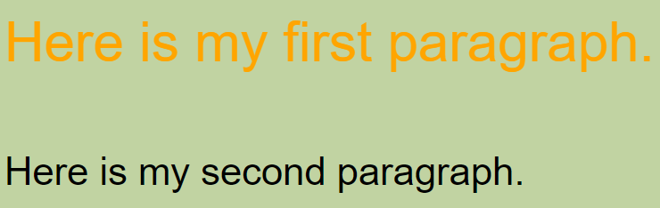

About Inline CSS
This webpage utilizes only Inline CSS in order to achieve its current look.
Inline CSS is the technique to define the single element with the insert style sheets in an HTML document.
It has the interactive and unique style to create a single HTML element; we can define the inline CSS on the style attribute.
The major advantage of inline HTML is that it comes in handy and enables the multiple style attributes to an HTML tag with the defined CSS style of an element.
With Inline CSS, we can define the style attribute with an HTML element as per the below example.
We can also define inline CSS and integrate it into the style sheet. It helps us to override different CSS.

Figure 1: Sample Code for Inline CSS
Figure 2: Browser Output for Inline CSS
Use Cases
- Temporary Styling – Inline CSS is useful for quick, temporary styling changes that aren't intended to be reused across multiple elements. This is helpful during development or testing phases.
- Quick Mockups – When creating HTML prototypes or mockups, inline CSS allows developers to quickly apply styles without setting up an external stylesheet.
- Overriding Styles – Inline CSS can be used to override styles from external or internal stylesheets for specific elements. This is useful when you need to apply a unique style to a single element.
- Optimizing Performance – For critical pages like landing pages, inline CSS can improve loading times by embedding styles directly within the HTML, avoiding the delay caused by external stylesheet requests.
- Email Templates – Inline CSS is often used in email templates because many email clients do not support external or internal stylesheets.
Limitations
- Hard to Maintain – Inline CSS styles are scattered throughout the HTML, making it difficult to manage and update styles consistently.
- Non-reusable Styles – Styles defined inline cannot be reused across multiple elements, leading to code duplication.
- Increases Page Load Time – Embedding styles directly within HTML can increase the size of the HTML document, potentially slowing down page load times.
- Clutters HTML – Inline CSS can clutter the HTML, making it harder to read and maintain.
- Specificity Conflicts – Inline styles have a higher specificity than styles in external or internal stylesheets, which can lead to conflicts and unexpected results.
- No Browser Cache – Inline CSS does not benefit from browser caching, unlike external stylesheets, which can improve load times on subsequent visits.
- No Pseudo Classes – You can't style pseudo-classes like :hover in inline styles because they are intangible characteristics that don't actually exist in the HTML document.
- Limited to Single Element – Inline CSS can only style individual elements, not groups of elements or pseudo-classes.
Conclusion and References
Conclusion:
Inline CSS plays a pivotal role in web development by offering a straightforward and efficient way to style individual HTML elements directly.
Its ability to enable quick, temporary styling changes and facilitate the creation of HTML prototypes or mockups makes it an indispensable tool for developers.
Moreover, its utility in overriding existing styles and optimizing performance on critical web pages highlights its versatility.
In email template design, where many clients do not support external or internal stylesheets, inline CSS proves to be particularly valuable.
These varied use cases underscore the importance of inline CSS in enhancing web design efficiency and effectiveness.
References:
AspiringYouths. (n.d.). Advantages and disadvantages of inline CSS. AspiringYouths. Retrieved October 13, 2024, from https://aspiringyouths.com/advantages-disadvantages/inline-css
Codecademy. (n.d.). HTML inline styles. Codecademy. Retrieved October 13, 2024, from https://www.codecademy.com/article/html-inline-styles
Code Institute. (n.d.). Inline CSS. Code Institute. Retrieved October 13, 2024, from https://codeinstitute.net/global/blog/inline-css
FreeCodeCamp. (n.d.). Inline CSS guide: How to style an HTML tag directly. FreeCodeCamp. Retrieved October 13, 2024, from https://www.freecodecamp.org/news/inline-css-guide-how-to-style-an-html-tag-directly/
Gyata. (n.d.). Inline CSS. Gyata. Retrieved October 13, 2024, from https://www.gyata.ai/css/inline-css
Javatpoint. (n.d.). Inline CSS. Javatpoint. Retrieved October 13, 2024, from https://www.javatpoint.com/inline-css
Primer CSS. (n.d.). Inline CSS. Primer CSS. Retrieved October 13, 2024, from https://primercss.io/css-inline/
Simplilearn. (2023). Inline CSS tutorial. Simplilearn. Retrieved October 13, 2024, from https://www.simplilearn.com/tutorials/css-tutorial/inline-css
Name: Zildjian E. California
Student ID: 2024-14086
Email: zcalifornia@up.edu.ph
Phone: +63 9460604514